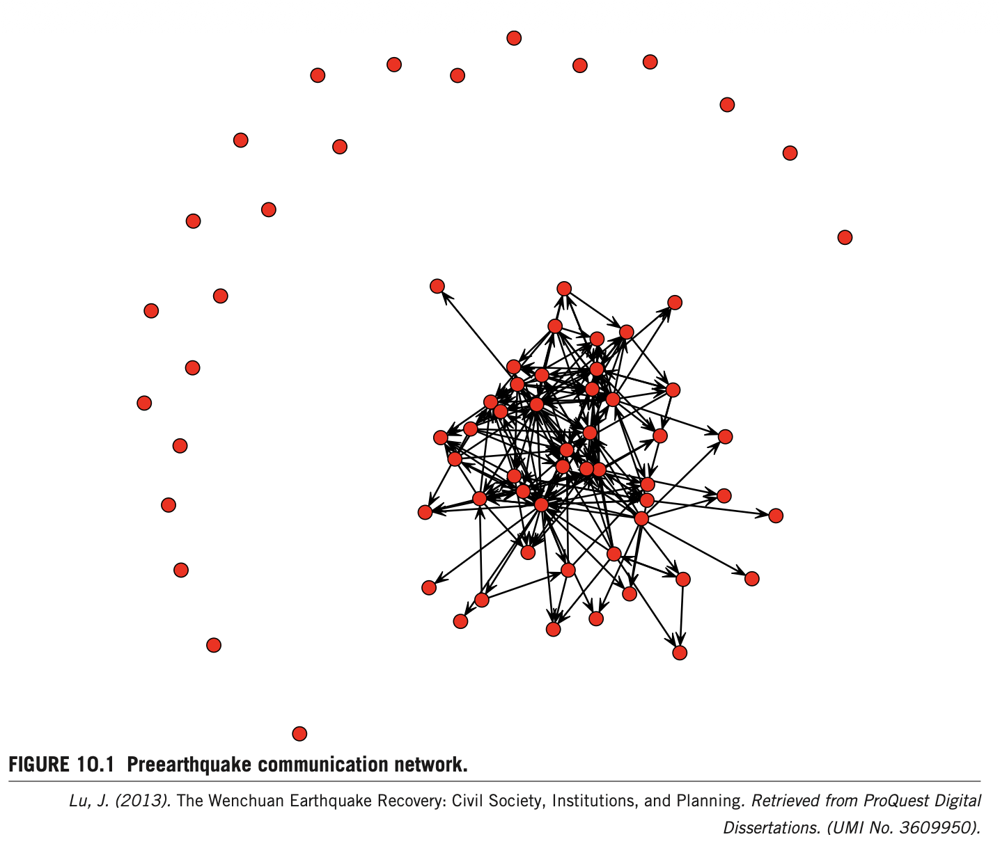
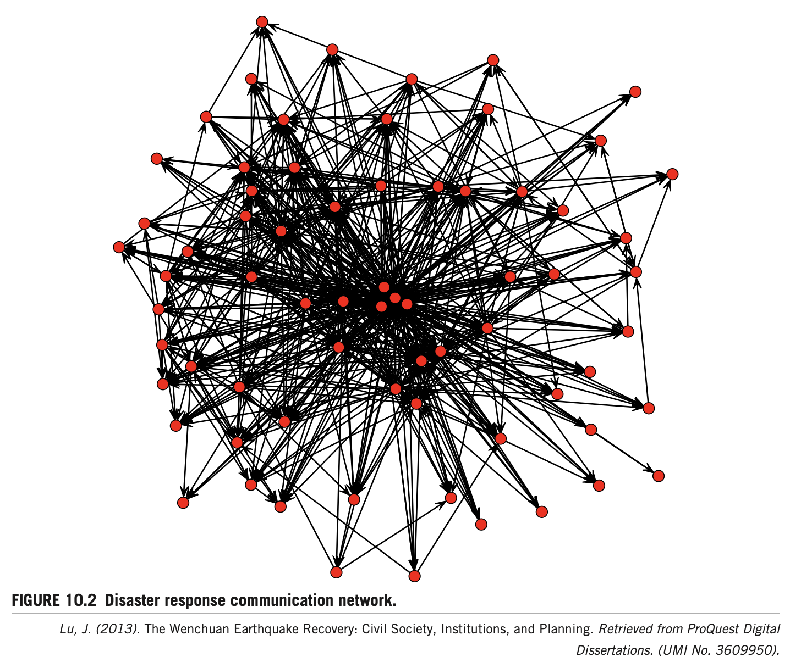
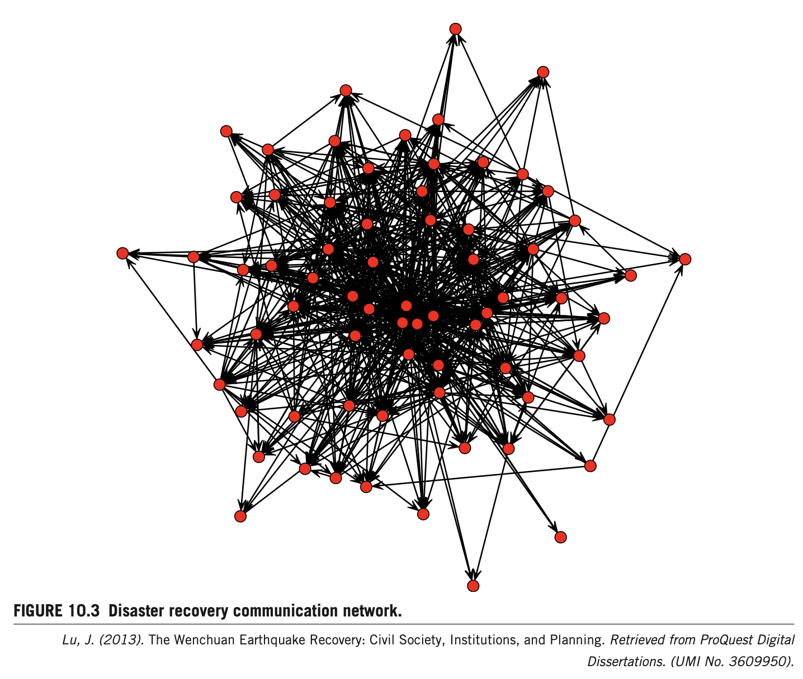

원촨 대지진 복구 과정에서의 조직 간 네트워크 동태성: 쓰촨성 시민사회 조직망의 종단적 진화
Interorganizational Network Dynamics in the Wenchuan Earthquake Recovery: Longitudinal Modeling of Civil Society Organizational Networks
1. 서론 및 문제의식 (Introduction)
재난 주기 전반에서의 시민사회 역할과 절차적-행위 접근법재난 연구자들은 대비(preparedness), 긴급 대응(emergency response), 복구(recovery), 완화(mitigation) 등 재난 생애주기의 각 단계에서 공공 부문, 민간 부문, 그리고 자생적 시민 집단(emergent citizen groups) 간의 다차원적 상호작용을 연구해 왔습니다(Stallings & Quarantelli, 1985; Neal, 1997). 최근에는 부문 간 교차 상호작용(cross-sector interactions), 특히 재난 복구 과정에서 시민사회 행위자(civil society actors)의 능동적이고 선제적인 역할이 위험 경감과 장기적 지속가능 발전에 필수적인 요소로 강조되고 있습니다(Arnold, 2006).
터키 골축 지진 (1999)
국가의 부실 대응과 공백 속에서 시민 네트워크가 급속히 부상하며 국가-사회 관계가 재협상됨(Ganapati, 2005; Pelling & Dill, 2010).
엘살바도르 미치 (1998)
신자유주의 국가 정책과 지방자치단체의 기획·재건 역량 결핍으로 시민사회가 예방 및 완화를 주도함(Wisner, 2001).
일본 고베 대지진 (1995)
국가는 물리적 인프라 재건에 집중한 반면, 시민사회는 사회적 인프라와 이재민 재정착을 주도하는 상호보완적 역할을 수행함(Aldrich, 2008).
2008년 중국 원촨 대지진(M8.0, 69,226명 사망)은 강력한 권위주의 국가 통제 하에서 유례없는 대규모 시민 자원봉사자와 풀뿌리 단체가 현장으로 쇄도한 사건으로, 자생적 시민사회의 발흥과 네트워크 진화 법칙을 규명할 수 있는 독보적인 자연실험 환경을 제공합니다.
2. 중국적 맥락에서의 시민사회 이론 (Civil Society Theory)
이중 관리 체제(Dual Management)와 등록 장벽 속의 풀뿌리 다원화서구 자유민주주의 국가와 달리 중국은 1949년 신중국 건국 이후 1970년대 말까지 국가와 사회가 완전히 일체화(near-unity)되어 기능적 영역이 거의 중첩되었습니다(Han, 2002; Tang, 1996; Tao, 2009). 1978년 개혁개방은 사회적 다원화와 중국형 시민사회의 출현을 촉진한 직접적 동인입니다. 중국의 시민사회는 서구처럼 국가에 대항하여 자생한 것이 아니라, 국가에 의해 촉진되고 사회주의 시장경제의 등장으로 육성되어 국가-시장 제도 간의 상호작용 속에서 형성되었습니다(Wu & Gong, 2008).
관변 민간단체 (GONGOs)
공산당-국가는 중화전국부녀연합회, 중화전국총공회 등 국가 통제 하의 관변단체를 운영하는 한편, 복합 사회서비스를 분담시키기 위해 사회복지단체와 업종협회를 전략적으로 육성함(Ma, 2006; Yu, 2009).
엄격한 설립 장벽 및 이중 관리 체제
업무주관단위(주무관청)의 사전 승인 기피, 회원 50인 이상 요건, 동일 행정구역 내 동일 분야 중복 설립 금지(비경쟁 원칙) 등으로 인해 미등록 비공식 단체 수가 등록 단체의 10배에 달함(Wang, 2007).
3. 연구 설계 및 분석 방법론 (Research Design)
SAOMs (확률적 행위자 지향 모델) 및 RSiena 종단 분석1) 네트워크 경계 및 소통 내용 규정
본 연구는 전체 네트워크(Whole network)를 분석 단위로 삼으며, 긴급대응기($t_2$)에 참여하여 장기복구기($t_3$)까지 지속적으로 활동한 136개 시민사회 조직과 정부 통합 노드 1개, 시장 기업 통합 노드 1개 등 총 138개 행위자를 표본으로 설정했습니다. 정보 탐색 및 교환(Information exchange)을 소통 네트워크의 핵심 내용으로 규정했습니다(Laumann & Knoke, 1987).
2) 결측치 보정 (Missingness Treatment)
총 136개 시민단체 중 63개 반환으로 응답률은 46.32%였습니다. 종단 네트워크 분석의 결측 편향을 극복하기 위해 2단계 과학적 보정을 적용했습니다:
- UCINET 핵심-주변부 분석(CORR 알고리즘): 3개 시점 전반에 걸쳐 지속적으로 핵심 위치를 유지한 70개 핵심 행위자(Core actors) 추출.
- RSiena 조직 구성 변화(Composition Change) 기능: 각 조직의 네트워크 진입 시점을 외생적 사건으로 명시하여 최종 결측률을 15.7%로 통제(RSiena 권장 안전 범위인 10%~20% 달성; Ripley et al., 2012).
3) RSiena 확률적 행위자 지향 모델 (SAOMs) 수식 체계
- $i$: 초점 행위자 (Ego)
- $\beta_k$: 통계적 추정 모수 (효과 $s_{ik}(x)$의 가중치 및 선형 예측인자)
- $s_{ik}(x)$: 네트워크 구조 효과(상호성, 전이성 등) 및 공변량(등록 여부, 활동 분야 등)으로 구성된 목적 함수. 각 행위자는 자신의 목적 함수 값을 극대화하는 방향으로 네트워크 연계를 생성, 유지 또는 단절함.
4. Table 10.1 및 소통 네트워크 기술통계
지진 전($t_1$), 긴급대응기($t_2$), 장기복구기($t_3$) 3개 시점의 기초 지표 비교| 측정 지표 (Measures) | 지진 이전 ($t_1$) Preearthquake |
긴급대응기 ($t_2$) Emergency Response |
장기복구기 ($t_3$) Disaster Recovery |
|---|---|---|---|
| 평균 내향차수 (Average Indegree) | 2.7 | 9.8 | 11.1 |
| 표준편차 (Standard Deviation in / out) | 2.9 / 5.2 | 6.8 / 13.5 | 6.9 / 14.0 |
| 상호성 (Reciprocity) | 0.11 | 0.15 | 0.17 |
| 군집화 계수 (Clustering) | 0.17 | 0.24 | 0.28 |

2. 구조적 지속성: 복구기($t_3$)에도 차수가 11.1로 지속 상승하고 상호성(0.17)과 군집화(0.28)가 계속 심화되어 네트워크 해체가 아닌 안정적 응집을 유지함.
3. 외향 차수 변동성(14.0)의 우세: 내향 차수(6.9)보다 외향 차수의 변동성이 2배 이상 높음은, 정보 발신에 적극적인 조직과 소극적인 조직 간 행위 주도성(Agency motivation)의 차별화가 뚜렷했음을 실증함.
5. 긴급대응기 소통망 동태성 ($t_1 \to t_2$)
삼원소 폐쇄, 위계 형성, 그리고 이질적 등록 지위 간 상호성
상호성 추구 (Reciprocity = 0.41†)
지진 직후 시민단체들은 상호 간 정보 교환에 긍정적으로 화답하며 자생적 시민사회의 맹아를 형성함.
전이적 삼원소군 (Triplets = 0.11**)
"친구의 친구는 친구가 된다"는 삼각 폐쇄가 작동. 3-순환(-0.12, n.s.) 부재로 위계적 질서가 유지됨.
인기 집중화 (Indegree Pop. = 0.93**)
초기 많은 정보 요청을 받은 핵심 조직으로 추가 연결이 집중되는 마태 효과(부익부 빈익빈) 발현.
과도한 발신 기피 (Outdegree Pop. = -0.17*)
혼자서 너무 많은 곳에 일방적으로 연락하는 조직은 파트너로서의 인기가 유의하게 하락함.
6. Table 10.2 및 장기복구기 소통망 동태성 ($t_2 \to t_3$)
풀뿌리 조직의 정보 주역 부상 및 활동 분야별 구조적 분화| 모형 효과 (Model Effect) | 긴급대응기 ($t_1 \to t_2$) 모수추정치 (표준오차) |
장기복구기 ($t_2 \to t_3$) 모수추정치 (표준오차) |
학술적 의미 및 현장 해석 |
|---|---|---|---|
| Within Network (네트워크 내적 구조 효과) | |||
| • Outdegree (밀도 기저) | −3.30** (0.18) | −4.18** (0.69) | 연계 형성의 희소성 및 기저 비용 반영 |
| • Reciprocity (상호성) | 0.41† (0.23) | 0.91** (0.17) | 복구기에 상호성이 2배 이상 강화 (일시적 충동이 아닌 장기 헌신 증명) |
| • Transitive triplets (전이적 삼원소군) | 0.11** (0.04) | 0.08* (0.05) | 중개자를 통한 신뢰 군집화 유지 |
| • Three cycles (3-순환) | −0.12 (0.07) | 0.01 (0.35) | 비유의 (수평적 순환구조 부재) |
| • Transitive ties (전이적 연계) | −0.89** (0.21) | 1.01** (0.01) | 복구기에 강력한 정(+)의 전이 연계 완성 |
| • Balance (균형 효과) | −0.09** (0.01) | −0.01 (0.06) | 복구기에 비유의화 (구조적 안정화 달성) |
| • Indegree popularity (내향차수 인기) | 0.93** (0.07) | 0.43** (0.12) | 인기 조직 중심화 지속 (지위 효과 잔존) |
| • Outdegree popularity (외향차수 인기) | −0.17* (0.08) | −0.29* (0.13) | 과도한 발신 조직에 대한 파트너 기피 지속 |
| Registration (등록 지위 효과) | |||
| • Int. Registration similarity × reciprocity | −1.39** (0.40) | −0.48† (0.13) | 등록-미등록 간 이종 상호성 지속 (포용적 생태계) |
| • Registration ego (미등록 풀뿌리) | – (–) | 0.41** (0.25) | 복구기 미등록 풀뿌리가 정보 발신의 핵심 주체 부상 |
| Activity (복구 활동 분야 효과: $t_2 \to t_3$) | |||
| • Housing ego × Housing alter (동류성) | – (–) | 0.84** (0.11) | 주택 재건 단체 간 폐쇄적 끼리끼리 소통 강력 |
| • Elderly_disabled alter (수신 인기) | – (–) | 0.84** (0.11) | 노인·장애인 지원 단체로 전방위 정보 요청 쇄도 |
| • Women_children ego × alter (동류성) | – (–) | 0.74** (0.22) | 여성·아동 지원 단체 간 강력한 협력 클러스터 |
| • Environment ego × alter (동류성) | – (–) | −0.50** (0.23) | 환경 단체 간 소통 분절 및 고립 |
| • Psychology ego × alter (동류성) | – (–) | 0.40** (0.23) | 심리지원 단체 간 유의미한 상호 연계 형성 |

7. 구조적 레질리언스의 발현 (Structural Resilience)
다양성과 응집력의 공존: 재난 네트워크의 3대 진화 축1. 미시 구조의 지속성 & 지위 다양성
상호성과 전이적 폐쇄가 일회성에 그치지 않고 장기화됨. 등록-미등록 조직 간의 교차 정보 교환으로 사회적 포용성 달성.
2. 초기 인기 조직의 위계적 질서
긴급대응기에서 높은 인기를 누렸던 핵심 조직들이 복구기에도 신뢰받는 허브 역할을 수행하여 네트워크 파편화 방지.
3. 기능별 차별화된 구조 형성
주택의 폐쇄적 클러스터, 노인·장애인의 정보 집중, 여성·심리의 개방적 연계 등 분야별 고유 구조가 재난 충격을 분산 흡수함.
8. 박사학위 논문 선행연구 9단계 종합 분석 매트릭스
GEMINI.md 연구원칙 및 표준 작성 템플릿 준수| 순서 | 단계 | 주요 내용 및 본문 매핑 |
|---|---|---|
| 1 | 연구배경 | 2008년 중국 원촨 대지진(M8.0, 6.9만 명 사망)을 계기로 분출한 시민사회의 선제적 구호 활동. 권위주의 국가 통제 하에서 시민사회의 종단적 네트워크 진화 과정에 대한 실증적 연구 부재. |
| 2 | 이론적 개념 | • 사회연결망 동태성(Network Dynamics): 상호성, 전이성, 구조적 균형 등 미시 구조 진화. • 이중 관리 체제(Dual Management): NGO 등록 장벽과 비공식 풀뿌리 조직의 분화. • 구조적 레질리언스(Structural Resilience): 다양성과 응집력을 유지하는 네트워크 적응 역량. |
| 3 | 연구목적 | 지진 전($t_1$), 대응기($t_2$), 복구기($t_3$)에 걸친 조직 간 소통망의 구조적 변화 법칙과 행위자 등록 지위 및 복구 활동 분야가 소통망 형성에 미치는 종단적 영향 실증. |
| 4 | 연구방법 | 3-wave 전체망 패널 조사. 쓰촨 현장 136개 시민단체 중 63개 응답(46.3%) → UCINET 핵심-주변부(CORR) 70개 핵심 노드 추출 + RSiena 구성변화 모델링으로 최종 결측률 15.7% 통제. SAOMs 분석. |
| 5 | 연구결과 | 평균 차수(2.7 → 9.8 → 11.1), 상호성(0.11 → 0.15 → 0.17) 상승. 상호성($0.41 \to 0.91^{**}$), 전이적 삼원소($0.11^{**} \to 0.08^{*}$) 유의. 등록 유사성×상호성($-1.39^{**} \to -0.48^{\dagger}$) 음수 확인. |
| 6 | 핵심 발견 | • 충동을 넘어선 구조적 헌신: 상호성과 삼원소 폐쇄가 장기 복구기까지 유지·심화. • 이질적 등록 지위 간 상호성: 공식 등록 단체와 비공식 풀뿌리 단체 간의 편견 없는 교차 소통. • 분야별 분화: 주택 재건의 폐쇄적 동류성($0.84^{**}$)과 취약계층망의 정보 집중 공존. |
| 7 | 연구의 한계 | 핵심 70개 노드 중심 분석으로 주변부 소외 조직 누락 가능성. 3년 후 회상 조사로 인한 후향적 편향 존재. 정부와 시장 노드를 단일 노드로 단순화하여 다부문 역학 분석 제한. |
| 8 | 이론적 시사점 | 권위주의 국가 맥락에서도 재난 위기가 자생적 다원주의(Pluralism)와 레질리언스를 점화함을 입증. '유유상종(Homophily)' 가설을 기각하고 '이질성 기반 상호성'의 가치 규명. |
| 9 | 후속연구 시사점 | 공공-민간-시민사회 다층 네트워크(Multilevel Multiplex Networks) 모형으로의 확장. 소통 구조 진화가 실제 이재민 수혜율과 복구 속도에 미치는 인과관계 실증. |
9. ★ [내 연구 적용] 소방·행정 관서와 민간 자생조직 간 협업 체계 및 KPI
교수님 심화 지도: 소방 고유 지표 70% vs 민관 협업 지표 30% 전략적 배분(민간·풀뿌리 DB화)"] --> B["[2단계] 긴급대응 (t1->t2)
(3각 신뢰 연계 구축)"] B --> C["[3단계] 장기복구 (t2->t3)
(이종 상호성 지원)"] C --> D["[4단계] Q방법론 평가
(주관적 인식 유형화)"]
| 분류 | 단계 | 가중치 | 핵심 성과지표 (KPI) | 산출식 및 측정 기준 | 판단 근거 (Ch.10 매핑) | 관련 법적 근거 |
|---|---|---|---|---|---|---|
| 소방 고유 (70%) |
예방 | 20% | 관내 민간 자율구호조직 네트워크 등록률 | $(\text{사전 등록된 민간·풀뿌리 조직 수} / \text{총 파악 조직 수}) \times 100 \ge 85\%$ | Table 10.1 (t1 고립 노드의 사전 파악 및 통합 관리) | 소방기본법 제16조의2 (소방안전지원활동) |
| 대비 | 25% | 민관 합동 현장 긴급소통 훈련 이수율 | $(\text{합동 통신망 훈련 이수 조직 수} / \text{등록 민간 조직 수}) \times 100 \ge 90\%$ | Table 10.2 (초기 혼선 방지 및 Indegree 인기 집중도 관리) | 재난 및 안전관리 기본법 제35조 (재난대비훈련) |
|
| 대응 | 25% | 현장 3각 신뢰연계(전이적 삼원소) 형성률 | $(\text{소방-의소대-민간 합동 현장팀 가동 건수} / \text{총 출동 분과 수}) \times 100 \ge 95\%$ | Table 10.2 Transitive triplets ($0.11^{**}$) 현장 구현 | 119구조·구급에 관한 법률 제13조 (현장지휘) |
|
| 기관 협업 (30%) |
대응 | 15% | 이질적 주체 간 교차 정보 상호성 지수 | 소방·행정 ↔ 미등록 풀뿌리 단체 간 양방향 정보 교환 건수 평가 (1~5점) | Int. Registration similarity × reciprocity ($-1.39^{**}$ 이종 상호성) | 재난 및 안전관리 기본법 제4조 (국가와 지자체의 책무) |
| 복구 | 15% | 취약계층 심리·사회복지 협업 연계율 | $(\text{소방 이송 후 민간 심리·복지단체 인계 완료 건} / \text{요청 건}) \times 100 \ge 90\%$ | Table 10.2 Elderly/Disabled Alter ($0.84^{**}$), Psychology ($0.40^{**}$) | 재해구호법 제4조·제9조 (이재민 심리지원) |
- 재난 및 안전관리 기본법 제4조(국가 등의 책무): 재난 발생 시 공공기관뿐만 아니라 민간 협력체계를 가동하여 이재민을 보호할 국가적 책무 명시.
- 재난 및 안전관리 기본법 제35조(재난대비훈련): 중앙행정기관, 지자체 및 소방관서는 민간단체와 합동으로 정기적인 재난대비훈련 실시 의무화.
- 소방기본법 제16조의2(소방안전지원활동): 소방관서장은 민간 자율소방단체와의 협력을 통해 화재 예방 및 구호 활동을 지원할 수 있음.
- 의용소방대 설치 및 운영에 관한 법률 제7조(임무): 의용소방대는 화재 등 재난 현장에서 소방관서를 보조하고 지역 자율방재단과의 가교 역할 수행.
10. 주관성 연구(Q방법론) 확장: Q진술문 (36선) 및 P표본 설계
재난 대응 민관 협업 성공 요인에 대한 주관적 인식 유형화
연구 목적: 재난 긴급대응 및 장기복구 단계에서 소방관과 민간 활동가가 인지하는 '민관 협업 네트워크 성공 요인'의 주관적 인식 유형을 도출함.
P-표본 (P-Sample, 40명 내외): 소방공무원 12명, 의용소방대 및 재난과 공무원 10명, 등록 비영리 구호단체 10명, 미등록 풀뿌리 자원봉사자 및 이장 8명.
[A] 예방 및 사전 거버넌스 단계 (Q01 ~ Q09)
• Q01: 평상시 비공식 풀뿌리 단체까지 포함하는 민관 소통 명부가 작성되어 있어야 비상시 혼선이 없다.
• Q02: 공공기관에 정식 등록된 단체만을 파트너로 인정하는 현행 제도는 현장 대응력을 약화시킨다.
• Q03: 관할 소방서와 민간 자원봉사단체 간의 정기적인 친목 및 간담회가 위기 시 협업을 촉진한다.
• Q07: 사전 협약(MOU) 체결보다는 현장 실무자 간의 개인적 유대와 신뢰가 훨씬 더 중요하다.
• Q09: 지역의 자생적 종교단체나 번영회 등도 잠재적인 재난 구호 네트워크의 핵심 자원이다.
[B] 긴급대응 단계 (Q10 ~ Q18)
• Q10: 재난 초기에는 강력한 단일 지휘체계(공식 소방 지휘) 하에 일사불란하게 통제되어야 한다.
• Q11: 초기 상황에서는 공식 절차보다 현장의 비공식 단체들이 자발적으로 움직여야 골든타임을 지킨다.
• Q12: 소방-의용소방대-현지 이장 간의 긴밀한 3각 소통이 초기 인명구조의 결정적 요인이다.
• Q15: 긴급대응기에는 서로 다른 출신의 조직들이라도 정보 요청에 즉각적으로 쌍방향 응답해야 한다.
• Q16: 현장에서는 이미 지명도가 높은 유명 구호단체에만 정보와 자원이 쏠리는 현상이 심각하다.
[C] 장기복구 및 안정화 단계 (Q19 ~ Q27)
• Q19: 응급 대응이 끝나면 정부의 관심이 급감하므로 민간 풀뿌리 단체들의 역할이 더욱 중요해진다.
• Q20: 복구 단계에서는 일방적 지휘 통제보다 수평적 네트워크 협력 거버넌스가 작동해야 한다.
• Q21: 주택 복구 단체들은 자기들끼리만 정보를 공유하고 다른 복구 단체들과는 소통하지 않는다.
• Q22: 노인, 장애인 등 사회적 약자를 돌보는 단체에 복구 자원과 정보가 최우선적으로 집중되어야 한다.
• Q24: 미등록 비공식 단체들이 재정난으로 현장을 떠나지 않도록 행정적·재정적 지원이 뒷받침되어야 한다.
[D] 제도 개선 및 구조적 평가 (Q28 ~ Q36)
• Q28: 비공식 단체들이 법적 등록 장벽 때문에 공적 자금 지원에서 배제되는 것은 불합리하다.
• Q30: 민관 협력의 성패는 상호 존중과 신뢰라는 사회자본의 축적 정도에 달려 있다.
• Q31: 재난 대응 협업 평가 시 민간 조직과의 연계 실적(KPI)을 공무원 근무평정에 의무 반영해야 한다.
• Q32: 공공과 민간의 역할은 7:3 정도로 공공이 중심을 잡고 민간이 보조하는 구조가 가장 안전하다.
• Q33: 현장 상황에 따라서는 민간이 주도하고 공공이 행정 지원을 뒷받침하는 5:5 대등 모델이 필요하다.
유형 2: 풀뿌리 자율 연계형 (Grassroots Autonomy) — 미등록 비공식 단체의 자발성과 상향식 대응 강조.
유형 3: 전문 분과 폐쇄형 (Sectoral Specialization) — 주택, 의료, 복지 등 분야별 전문성과 분과 내 결속 중시.
유형 4: 다원적 포용 가교형 (Pluralistic Inclusive Bridgers) — 공공-민간, 등록-미등록 간의 이종 상호성과 네트워크 레질리언스 지향.